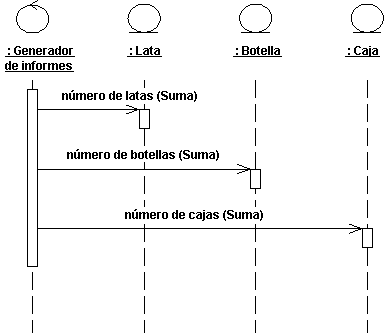
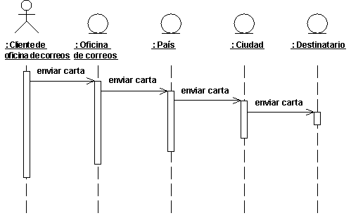
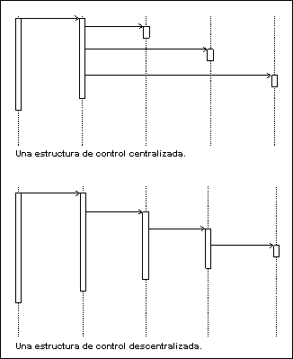

| Directriz: Diagrama de secuencia |
 |
|
| Elementos relacionados |
|---|
IntroducciónEn muchos casos se utiliza un diagrama de secuencia para ilustrar realizaciones de casos de uso (consulte el apartado Producto de trabajo: Realizaciones de casos de uso ), es decir, para mostrar cómo interactúan los objetos para llevar a cabo el comportamiento de todo o parte de un caso de uso . Uno o más diagramas de secuencia pueden ilustrar las interacciones de objetos que llevan a cabo un caso de uso . Una organización típica tiene un diagrama de secuencia para el flujo de sucesos principal y un diagrama de secuencia para cada subflujo independiente del caso de uso . Los diagramas de secuencia son especialmente importantes para los diseñadores, puesto que aclaran los roles de los objetos de un flujo, proporcionando así la entrada básica para determinar las interfaces y las responsabilidades de las clases. A diferencia de un diagrama de comunicación, un diagrama de secuencia incluye secuencias cronológicas, pero no incluye relaciones de objetos. Los diagramas de secuencia y los diagramas de comunicación expresan una información similar, pero de modos diferentes. Los diagramas de secuencia muestran la secuencia explícita de mensajes y resultan más adecuados cuando lo importante es visualizar el orden de tiempo de los mensajes. Cuando le interesen las relaciones entre las instancias de una interacción, utilice un diagrama de comunicación. Consulte el apartado Technique: Communication Diagram para obtener más información. Contenido de los diagramas de secuenciaEn los diagramas de secuencia puede tener objetos e instancias de actor, junto con mensajes que describan cómo interactúan. El diagrama describe lo que ocurre en los objetos participantes, en términos de activaciones, y cómo se comunican los objetos enviando mensajes entre sí. Puede realizar un diagrama de secuencia para cada variante del flujo de sucesos del caso de uso .
Un diagrama de secuencia que describe parte del flujo de sucesos del caso de uso Colocar llamada local en un conmutador telefónico sencillo. ObjetosUn objeto se muestra como una línea de guiones vertical denominada la "línea de vida". La línea de vida representa la existencia del objeto en un tiempo concreto. En la cabecera de la línea de vida se dibujo un símbolo de objeto, y muestra el nombre del objeto y su clase subrayada, separados por dos puntos: objectname : classname Puede utilizar objetos en diagramas de secuencia de los modos siguientes:
ActoresNormalmente, una instancia de actor se puede representar por la primera línea de vida (situada más a la izquierda) en el diagrama de secuencia, como la parte invocadora de la interacción. Si dispone de varias instancia de actor en el mismo diagrama, intente mantenerlas en las líneas de vida situadas más a la izquierda o más a la derecha. MensajesUn mensaje es una comunicación entre objetos que transfiere información con la expectativa de que esa actividad se llevará a cabo; en los diagramas de secuencia, un mensaje se muestra como una flecha compacta horizontal de la línea de vida de un objeto a la línea de vida de otro objeto. En el caso de un mensaje del objeto a sí mismo, la flecha puede empezar y finalizar en la misma línea de vida. La flecha está etiquetada con el nombre del mensaje, y sus parámetros. La flecha también puede estar etiquetada con un número de secuencia para mostrar la secuencia del mensaje en la interacción global. Los números de secuencia con frecuencia se omiten en los diagramas de secuencia, en los que la ubicación física de la flecha muestra la secuencia relativa. Un mensaje puede estar sin asignar, lo que significa que el nombre de una cadera de caracteres temporal que describe el significado global del mensaje, y no el nombre de una operación del objeto receptor. Posteriormente, podrá asignar el mensaje especificando la operación del objeto de destino del mensaje. La operación especificada reemplazará entonces el nombre del mensaje. ScriptsLos scripts describen textualmente el flujo de sucesos en un diagrama de secuencia. Debe situar los scripts a la izquierda de las líneas de vida, de modo que se pueda leer el flujo completo de arriba abajo (vea la figura que se muestra más abajo). Puede adjuntar scripts a un mensaje determinado, garantizando así que el script se mueva con el mensaje. Distribución del flujo de control en los diagramas de secuenciaEl control centralizado de un flujo de sucesos como parte del flujo de sucesos significa que algunos objetos dirigen el flujo enviando y recibiendo mensajes de otros objetos. Estos objetos de control deciden el orden en el que se activan los demás objetos en el caso de uso . La interacción entre el resto de los objetos apenas tiene trascendencia o no existe. Ejemplo En el sistema de máquina de reciclaje, el caso de uso Imprimir informe diario, hace un seguimiento del número y tipo de objetos devueltos, entre otras cosas y escribe el total en un recibo. El objeto de control Generador de informes decide el orden en el que se van a extraer y escribir las sumas.  La estructura de comportamiento del caso de uso Imprimir informe diario se centraliza en el objeto de control Generador de informes. Este es un ejemplo del comportamiento centralizado. La estructura de control se centraliza, principalmente, debido a que las diferentes fases de subsucesos del flujo de sucesos no dependen entre sí. La ventaja más importante de esta propuesta es que cada objeto no tiene que hacer el seguimiento del total del objeto siguiente. Para cambiar el orden de las fases de subsucesos, sólo debe cambiarlo en el objeto de control. También puede añadir fácilmente otra fase de subsucesos si, por ejemplo, se incluye un nuevo tipo de elemento de retorno. Otra ventaja de esta estructura es que le permite volver a utilizar las distintas fases de subsucesos en otros casos de uso , puesto que el orden del comportamiento no está construido en los objetos. El control descentralizado surge cuando los objetos participantes se comunican directamente con otro, no a través de uno o más objetos de control. Ejemplo En el caso de uso Enviar carta una persona envía una carta por correo a otro país a través de una oficina de correos. La carta primero se envía al país del destinatario. En el país, la carta se envía a la ciudad específica. En la ciudad, a su vez, se envía la carta al domicilio del destinatario.  La estructura de comportamiento del caso de uso Enviar carta es descentralizada. El comportamiento del caso de uso es un flujo de sucesos descentralizado. Las fases de subsucesos permanecen unidas. El remitente de la carta se refiere en términos de "enviar una carta a alguien". Ni necesita, ni desea conocer los detalles de cómo se envían las cartas a los países o las ciudades. (Probablemente, si una persona enviara una carta dentro del mismo país, no ocurriría ninguna de estas acciones). El tipo de control utilizada depende de la aplicación. Por lo general, debe intentar conseguir objetos independientes, es decir, delegar distintas tareas a los objetos que están mejor preparados para llevarlas a cabo. Un flujo de sucesos control centralizado tiene un diagrama de secuencia en "forma de horquilla". Por otra parte, un diagrama de secuencia "escalonado" ilustra que la estructura de control es descentralizada para los objetos participantes.  Una estructura de control centralizado en un flujo de sucesos produce un diagrama de secuencia en "forma de horquilla". Una estructura de control descentralizado produce un diagrama de secuencia "escalonado". Con frecuencia, la estructura de comportamiento de una realización de caso de uso consta de una mezcla de comportamiento centralizado y descentralizado. Una estructura descentralizada es adecuada:
Una estructura centralizada es adecuada:
|

© Copyright IBM Corp. 1987, 2006. Reservados todos los derechos. |